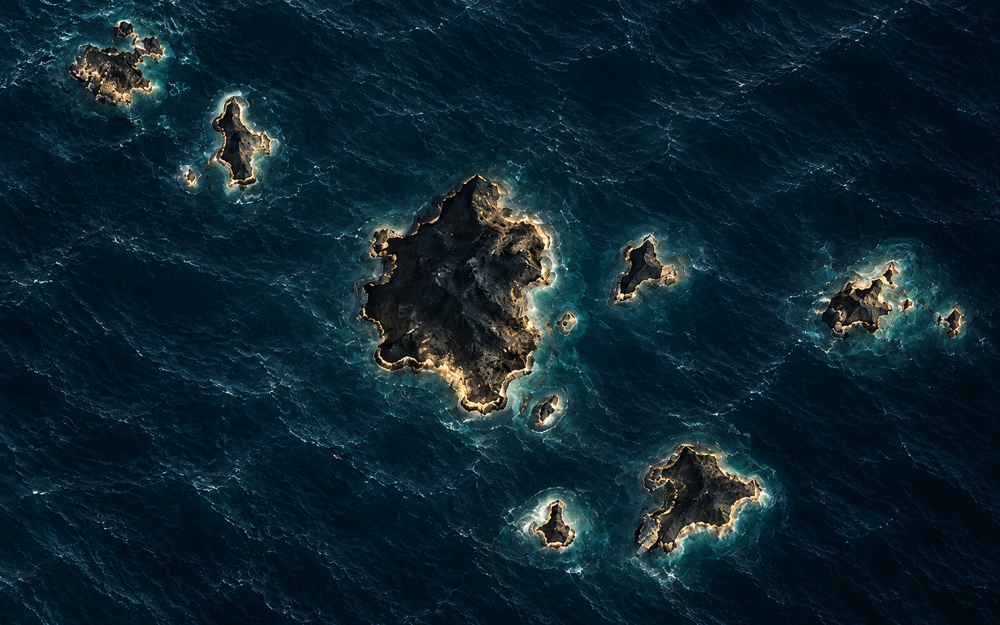

海空跨域无人集群
Agent
让海洋更可知 让任务更高效
深海无界 · 协同共行
AI 任务协调员
我已就绪，为您规划和执行海空协同任务。
请对目标海域进行二维扫描，生成覆盖完整的航迹，避开岛礁区域。
已理解任务目标：
对指定海域进行二维扫描，生成覆盖完整的航迹，并避开岛礁区域。
任务理解
解析任务区域与约束条件
识别岛礁、禁航区等障碍物
确定扫描策略（二维、等距航线）
生成路径
构建可航行区域
规划覆盖航线
优化航迹长度与转弯节点
执行完成
已完成航迹生成与模拟验证
覆盖率达标
可下发执行
二维海域扫描任务已完成。
本次规划覆盖率
96%
，航迹总长度
12.4 km
，
已避开所有岛礁区域。
任务需求
海域扫描结果
地图显示模式
二维扫描（S型航线）
海域地形

N
S
W
E
扫描航迹
岛礁区域
任务海域
起点 / 终点
0
2.5
5 km
正在生成航迹
覆盖率
96
%
已覆盖面积
482.6 km²
目标面积
502.1 km²
路径
12.4
km
航点数量
48
航线类型
二维扫描（S型）
执行完成
任务已完成
可查看任务报告
OCEAN · AIR · AGENT